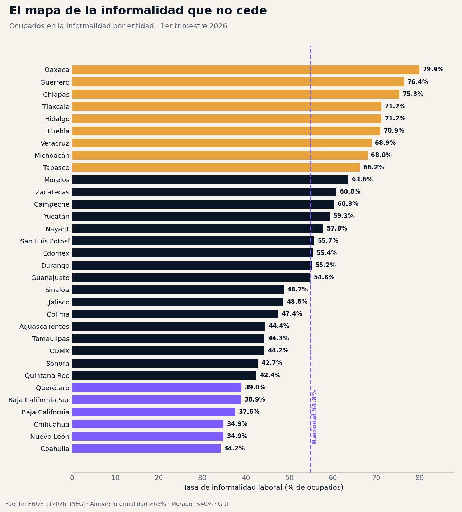
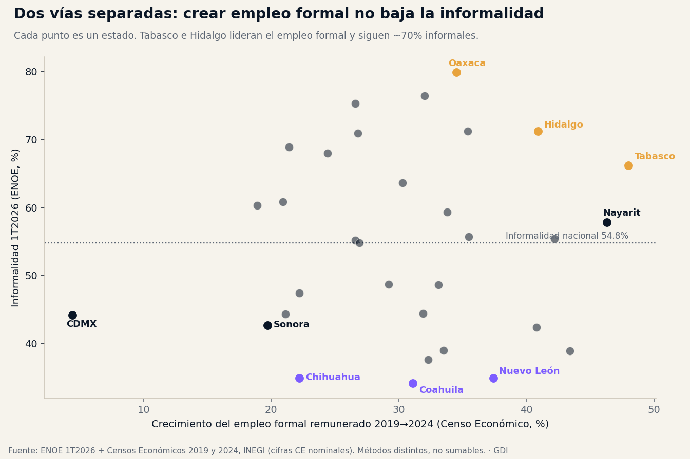

El primer trimestre de 2026 dejó una cifra que se presta al optimismo: la tasa de desocupación nacional fue de 2.6%, de las más bajas registradas. Casi todo el que busca trabajo, lo encuentra. Pero debajo de ese titular hay otro número que un gobierno no puede ignorar: de los 59,552,660 mexicanos ocupados, 32,625,872 lo hacen en la informalidad — sin contrato, sin seguridad social, sin acceso pleno a derechos laborales. Es el 54.8% de toda la fuerza laboral.
Que haya empleo no significa que haya empleo protegido. Y para un tesorero, un secretario de desarrollo o un presidente municipal, la diferencia es concreta: cada trabajador informal es una persona fuera del padrón de seguridad social, una base gravable que no se recauda y una demanda de servicios públicos que no se financia con las cuotas de quien la genera. Este análisis ordena el universo completo de las 32 entidades con la ENOE del 1er trimestre de 2026 del INEGI, sin agrupar de antemano, para ver dónde se concentra el problema y qué lo mueve —o no—.
La radiografía: dos Méxicos laborales
Ordenadas por su tasa de informalidad, las 32 entidades dibujan una geografía nítida. En un extremo, un bloque de estados del sur y centro donde trabajar sin protección es la norma; en el otro, un norte industrial donde es la excepción.

Oaxaca encabeza con 79.9% de informalidad: cuatro de cada cinco ocupados. Le siguen Guerrero (76.4%), Chiapas (75.3%), Hidalgo y Tlaxcala (71.2%) y Puebla (70.9%). En el otro extremo, Coahuila (34.2%), Chihuahua y Nuevo León (34.9%) y Baja California (37.6%). La brecha entre el estado más informal y el menos informal es de 45.7 puntos porcentuales: la informalidad de Oaxaca más que duplica la de Coahuila. No es un matiz regional; son dos economías laborales distintas dentro del mismo país.
Personas ocupadas en la informalidad en México, 1T2026 — el 54.8% de todos los que trabajan. Cada una está fuera del padrón de seguridad social.
La masa no está donde la tasa es más alta. Aunque Oaxaca lidera en proporción, el estado con más trabajadores informales en términos absolutos es el Estado de México, con 4,504,998, seguido de Veracruz (2,303,925), Puebla (2,176,821) y la Ciudad de México (2,167,105). Esos cuatro estados concentran uno de cada tres informales del país. Es un dato que importa para focalizar: la política de formalización debe atender tanto la alta incidencia del sur como el enorme volumen del centro.
El hallazgo: crear empleo formal no está bajando la informalidad
Aquí es donde los datos rompen la narrativa fácil. Sería intuitivo pensar que los estados que más empleo formal generaron en los últimos años son los que menos informalidad tienen. Cruzamos la informalidad de 2026 con el crecimiento del empleo remunerado formal entre los Censos Económicos 2019 y 2024 (INEGI). El resultado es que ambas variables corren por vías separadas.

Los 32 estados crecieron en empleo formal remunerado —del +4.4% de la CDMX al +48% de Tabasco—, pero eso no se tradujo en menos informalidad donde más creció. Tabasco fue el líder nacional en creación de empleo formal (+48%) y sigue con 66.2% de informalidad. Hidalgo creció 40.9% y permanece en 71.2%. En sentido contrario, Chihuahua apenas creció 22.2% en empleo formal —de los últimos lugares— y es el segundo estado menos informal del país (34.9%). Coahuila creció 31.1% y es el menos informal de todos.
| Estado | Informalidad 1T2026 | Crec. empleo formal 2019-2024 | Ingreso mensual del ocupado |
|---|---|---|---|
| Oaxaca | 79.9% | +34.5% | $8,386 |
| Chiapas | 75.3% | +26.6% | $7,309 |
| Hidalgo | 71.2% | +40.9% | $9,006 |
| Tabasco | 66.2% | +48.0% | $8,835 |
| Nacional | 54.8% | — | $11,043 |
| Nuevo León | 34.9% | +37.4% | $14,786 |
| Chihuahua | 34.9% | +22.2% | $13,449 |
| Coahuila | 34.2% | +31.1% | $12,425 |
Fuente: ENOE 1T2026 (informalidad, ingreso) · Censos Económicos 2019 y 2024, INEGI (empleo formal remunerado, cifras nominales). Métodos distintos: no se suman entre sí.
La lectura es incómoda pero clara: la informalidad es estructural, no coyuntural. Un estado puede sumar plazas formales a buen ritmo y seguir mayoritariamente informal, porque la base informal es tan grande que las altas formales no alcanzan a moverla. El norte llegó a su baja informalidad tras décadas de estructura industrial y salarial, no por un impulso reciente. El "empleo récord" no está formalizando al país.
El trimestre no mueve la aguja del sur
Entre el 4º trimestre de 2025 y el 1º de 2026, la mayoría de los estados registró cambios pequeños. Los descensos más notorios —Sonora (−2.9 pp), Quintana Roo (−2.3 pp), Querétaro (−1.7 pp)— ocurrieron en estados que ya tenían informalidad baja o media. En contraste, los estados más informales prácticamente no se movieron: Oaxaca −0.1 pp, Chiapas +0.4 pp, Guerrero +0.6 pp. Con un solo trimestre no se puede hablar de tendencia —influyen factores estacionales—, pero la foto es consistente con el hallazgo de fondo: la informalidad estructural del sur no responde a los vaivenes de corto plazo.
El costo que se paga en ingreso
La informalidad no es neutral para el bolsillo. El ingreso mensual promedio del ocupado sigue de cerca a la tasa de informalidad, en sentido inverso: Chiapas, el tercer estado más informal, es el que menos paga ($7,309 al mes); Oaxaca, $8,386. En el extremo formal, Baja California Sur ($16,327), Nuevo León ($14,786) y Baja California ($14,632) encabezan el ingreso. Un mercado laboral informal es, casi por definición, un mercado de bajos ingresos —y por tanto de baja recaudación local y menor derrama.
La estructura lo explica: en Oaxaca, el 37.5% de los ocupados trabaja por cuenta propia y otro 10.5% no recibe pago alguno. Sumados, casi la mitad de los ocupados oaxaqueños opera fuera de una relación salarial —changarros, autoempleo, trabajo familiar—. En Coahuila, el trabajo no remunerado es de apenas 0.9%.
Implicaciones para la gestión pública
1. La formalización no es subproducto del crecimiento: es política
Los datos desmontan la idea de que atraer empleo formal basta. Un gobierno estatal que quiera reducir informalidad necesita instrumentos propios: simplificación de la afiliación y el alta patronal, fiscalización proporcional, ventanillas únicas, incentivos a que el micronegocio se registre. Esperar a que el crecimiento lo resuelva es esperar en vano.
2. Recaudación y padrón: el 54.8% que no cotiza
Cada punto de informalidad es base gravable y afiliación que no ingresan. Los estados con informalidad superior al 70% —Oaxaca, Guerrero, Chiapas, Hidalgo, Tlaxcala, Puebla— financian sus servicios con una fracción pequeña de su población económicamente activa cotizando. La sostenibilidad de sus finanzas depende de ampliar esa base, no solo de las transferencias federales.
3. Focalizar por incidencia y por volumen a la vez
El sur concentra las tasas más altas; el centro, el mayor volumen absoluto. El Estado de México, con 4.5 millones de trabajadores informales, requiere una estrategia de escala distinta a la de Oaxaca, donde el reto es la incidencia casi universal. Una política nacional uniforme falla en ambos.
4. Protección social desligada del empleo formal
Si más de la mitad de los ocupados no accede a seguridad social por la vía laboral, los esquemas de protección —salud, pensiones, guarderías— que dependen del empleo formal dejan fuera a la mayoría. El diseño de política social de las entidades con alta informalidad no puede asumir un mercado laboral formalizado que no existe.
Conclusión
México celebra su desempleo mínimo, pero el indicador que define la calidad de su mercado laboral —y la salud fiscal de sus territorios— es otro: 32.6 millones de personas trabajando sin red. La informalidad no bajará por inercia del crecimiento; los datos muestran que ni siquiera los estados campeones en empleo formal la están reduciendo. Reducirla exige decisión de política pública, sostenida y territorializada. El "empleo récord" es una buena noticia a medias: hay trabajo, pero para más de la mitad de quienes lo tienen, sigue sin haber protección.
¿Cómo es la informalidad en tu estado?
En la plataforma de GDI puedes consultar la ENOE, el Censo Económico, el panorama social CONEVAL y las finanzas públicas de cualquier territorio de México — y construir el diagnóstico laboral de tu entidad o municipio en minutos.
Explorar mi territorioDatos técnicos
Fuente principal: INEGI, Encuesta Nacional de Ocupación y Empleo (ENOE), 1er trimestre de 2026 — tasa de informalidad laboral, ocupados, ingreso promedio mensual del ocupado y estructura de la ocupación (cuenta propia, no remunerados). Nivel nacional y estatal (la ENOE no reporta a nivel municipal).
Fuente complementaria: INEGI, Censos Económicos 2019 y 2024 — personal remunerado por entidad para estimar el crecimiento del empleo formal. Las cifras del Censo Económico son nominales y corresponden a unidades económicas formales; la ENOE es una encuesta en hogares. Son metodologías distintas: se presentan como columnas a observar por separado, nunca sumadas ni combinadas en un mismo indicador.
Nota metodológica: se analizó el universo completo de 32 entidades ordenado por tasa de informalidad, sin agrupamientos previos. La ENOE clasifica la ocupación por sector (primario, secundario, terciario), no por código SCIAN. El cambio trimestral 2025T4→2026T1 se reporta como movimiento reciente y no como tendencia anual, dada la ventana disponible.
Análisis: GDI — Gobierno Digital e Innovación · Fecha de análisis: 17 de julio de 2026 · gobiernodigitaleinnovacion.com